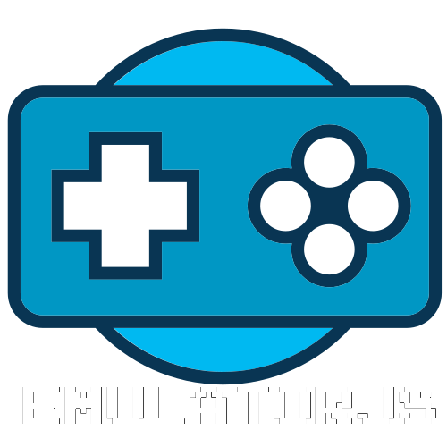

EmulatorJS
Loading cores…
Engine: not chosen
NES and SNES games
What's changed from the original EmulatorJS · Links · Reference docs
Game library
Recent games
Options
Browser mode
Saves
Storage: …
Hotkeys in game: press F1 for the full list (quick save F2, load F4, pause F5, fast forward F6). Hover or tap ? for help on each option.